Scenario 3: Network Isolation with Calico in Kubernetes
In this lab, you will install the Calico CNI into the KinD cluster and learn how to use Kubernetes NetworkPolicies to control pod-to-pod traffic. Unlike a default Kubernetes installation, which allows all pods to communicate freely, Calico enforces network policy rules so that only permitted traffic flows are allowed.
You will deploy a simple application and then incrementally lock down traffic between workloads using NetworkPolicies. By the end of the lab, you will understand how Calico implements network policies and how workloads can be isolated in a Kubernetes cluster.
Goals
By the end of this lab, you will be able to:
- Install Calico CNI into an existing KinD cluster
- Deploy sample workloads for traffic control demonstrations
- Apply Kubernetes NetworkPolicies to restrict ingress and egress
- Validate that traffic is allowed or denied based on policy rules
Estimated Completion
1 hr
Prerequisites
Before starting this lab, you should have:
- Completed Lab 2 and have a running KinD cluster (my-k8s)
- Calico will be installed against this existing cluster
- Working manifests in: ~/workspace/k8s/lab3/
Tasks
Task 1: Install Calico CNI
In this task, you will install Calico into your KinD cluster to enable Kubernetes NetworkPolicy enforcement.
1.1 Create a new KinD cluster
Go to ~/workspace/kind and make a new folder lab3
mkdir -p ~/workspace/kind/lab3
cd ~/workspace/kind/lab3
Create a kind-cni-config.yml
kind: Cluster
apiVersion: kind.x-k8s.io/v1alpha4
nodes:
- role: control-plane
extraPortMappings:
-containerPort: 30000
hostPort: 30000
- role: worker
- role: worker
networking:
disableDefaultCNI: true
podSubnet: 192.168.0.0/16
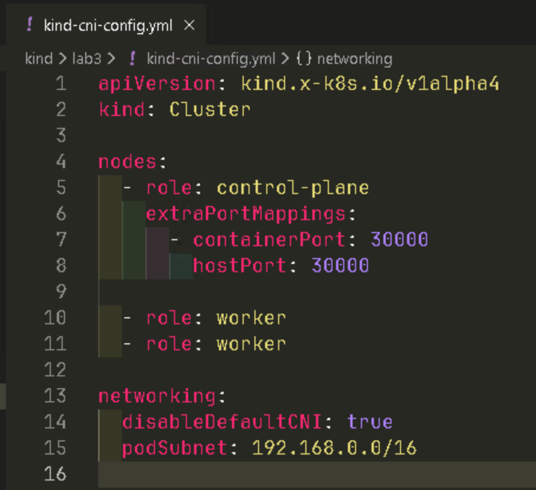
Note: disableDefaultCNI config.
1.2 Create the new KinD Cluster
kind create cluster --config kind-cni-config.yml --name my-k8s
Result:
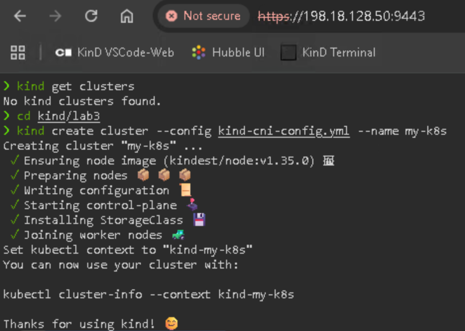
1.3 Verify KinD Cluster is Not Ready
kubectl get nodes -o wide
Expected Result:
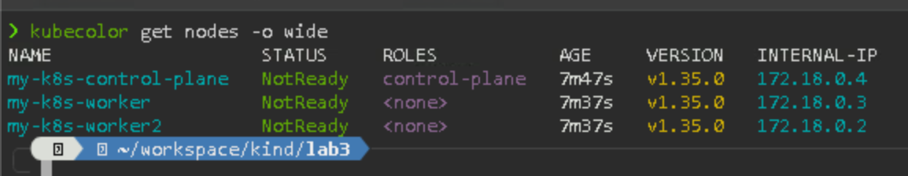
Cluster will be in Not Ready until CNI is installed
1.4 Create the manifest directory
mkdir -p ~/workspace/k8s/lab3/calico
cd ~/workspace/k8s/lab3/calico
1.5 Fetch and apply the Calico installation manifest
kubectl apply -f https://raw.githubusercontent.com/projectcalico/calico/v3.31.3/manifests/calico.yaml
Expected Result:
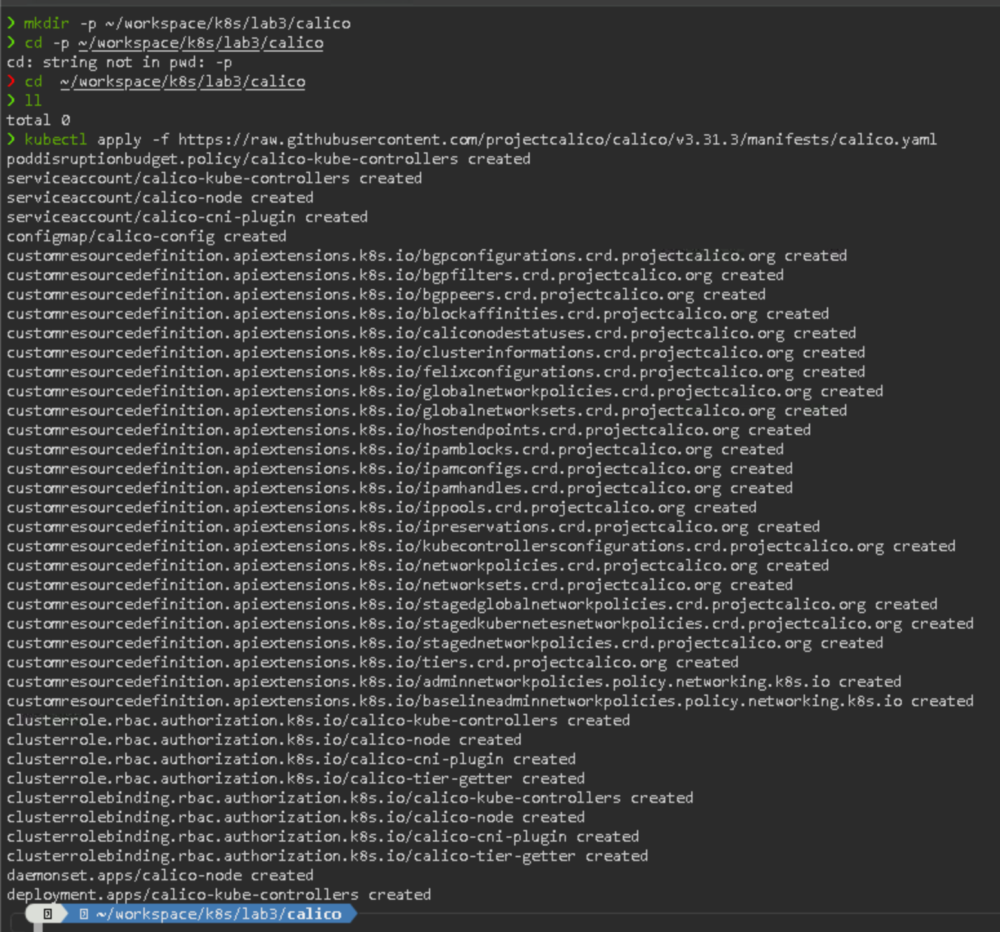
1.6 Verify the Calico pods are running
kubectl get pods -A
Expected Result:
All Calico pods should be in Running status:
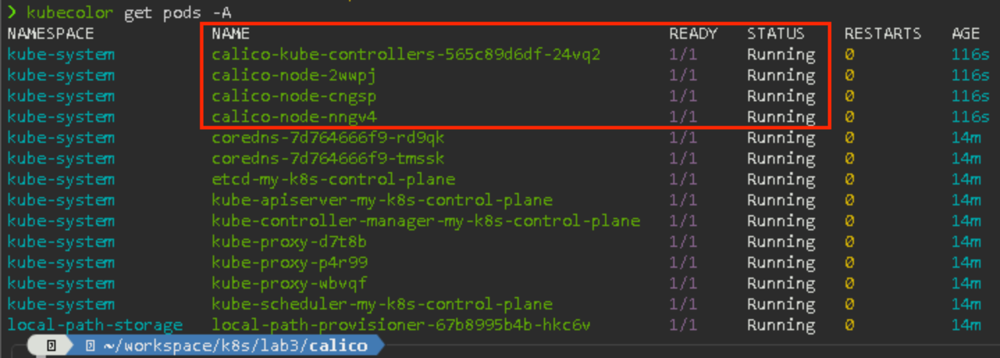
Also the cluster should be ready
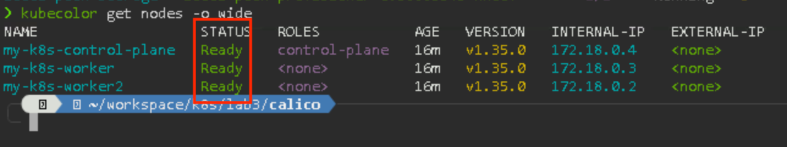
Task 2: Deploy Sample Workloads
In this task, you will deploy two simple NGINX pods in separate namespaces to demonstrate traffic control.
2.1 Create namespaces
Namespace is a mechanism for isolating and organizing groups of resources (like Pods, Services, and Deployments) within a single physical cluster, effectively creating "virtual clusters". They are crucial for multi-tenant environments where multiple teams or projects share the same infrastructure without interfering with each other.
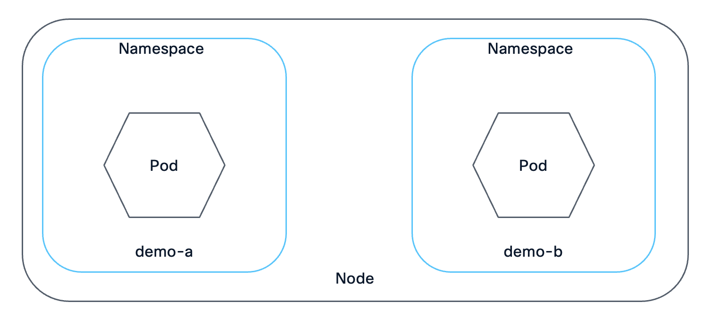
Run:
kubectl create ns demo-a
kubectl create ns demo-b
Apply Labels to be used as selectors in the policy
kubectl label ns demo-a name=demo-a
kubectl label ns demo-b name=demo-b
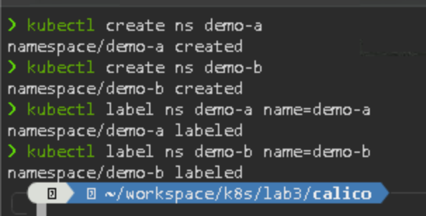
2.2 Deploy NGINX in each namespace
Here we are going to use kubectl cli to create a deployment, which is useful for quick testing. For production is always a best practice to create manifest
Run for namespace demo-a:
kubectl create deployment nginx-a --image=nginx -n demo-a
kubectl get deployment nginx-a -n demo-a
kubectl describe deployment nginx-a -n demo-a
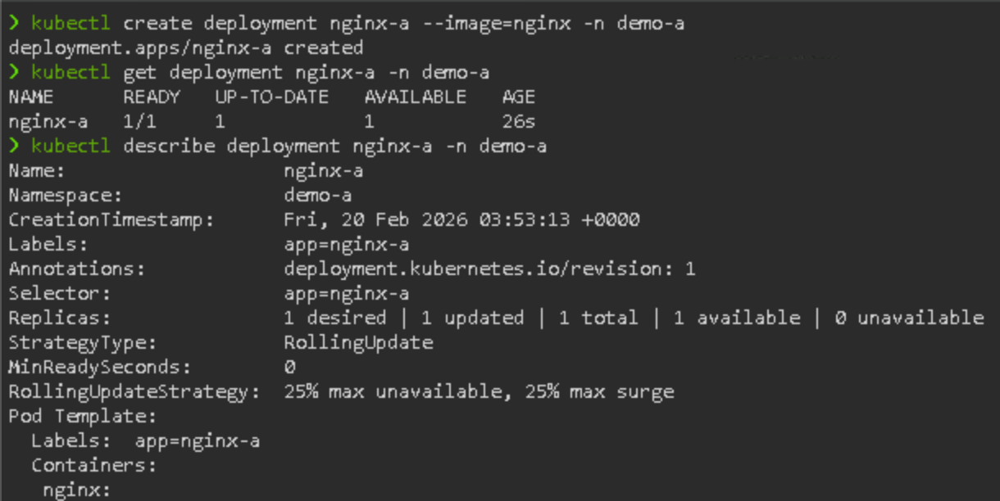
Create a Service by exposing the POD with a ClusterIP
kubectl expose deployment nginx-a --port=80 -n demo-a
Run for namespace demo-b:
kubectl create deployment nginx-b --image=nginx -n demo-b
kubectl expose deployment nginx-b --port=80 -n demo-b
Expected Result:
Two deployments and services exist
kubectl get svc -n demo-a
kubectl get svc -n demo-b
Service for nginx-a
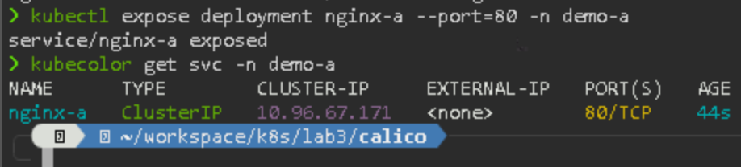
Service for nginx-b
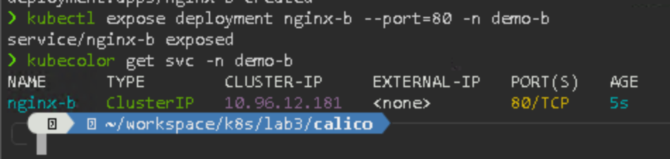
Both should show a ClusterIP service on port 80.
Task 3: Confirm Default Connectivity
Before applying any network policies, Kubernetes allows all pod-to-pod traffic by default.
Note: By default Kubernetes allows all traffic unless a NetworkPolicy is applied. Network policies do not apply automatically — the CNI must support them. Calico is one such CNI that implements them.
3.1 Create a busybox test pod
In demo-a:
kubectl run busybox --rm -ti --image=busybox --restart=Never -n demo-a -- /bin/sh
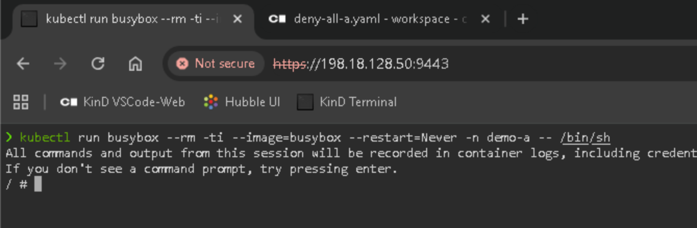
busy-box is an example of an ephemeral workload.
--rmflag means once the interactive session (-tiflag) finish, the pod will be destroyed right next.
Inside the busybox shell:
wget -q --timeout=5 nginx-b.demo-b.svc.cluster.local -O -
Note: the FQDN syntax
nginx-b.demo-b.svc.cluster.localto call the resource inside the Cluster. The standard format is<resource-name>.<namespace-name>.<resource-type>.<cluster-domain>.
Expected Result:
The NGINX welcome HTML is returned — indicating cross-namespace connectivity.
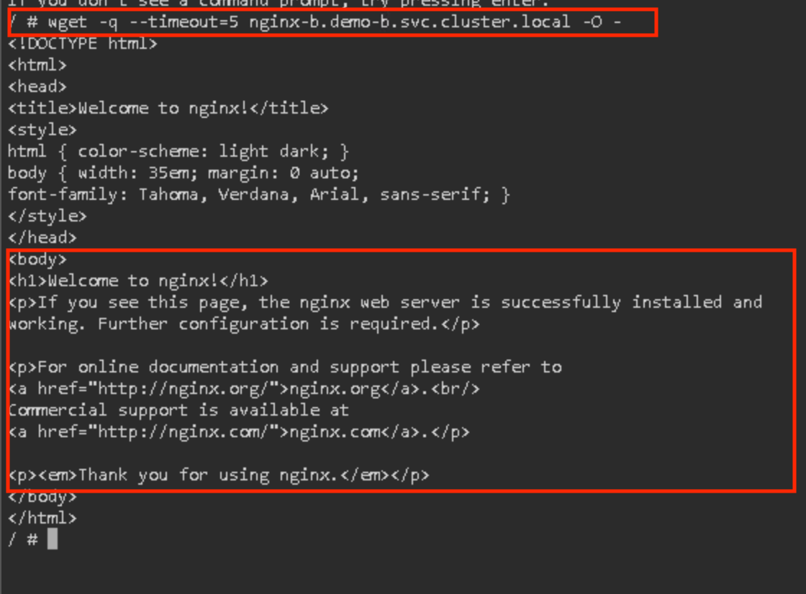
Finally, run exit from the busy box, the workload will be deleted from Namespace.
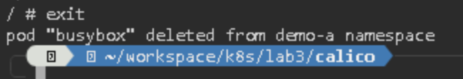
Native k8s Network Policies
Network policy is a resource that defines: How pods in one namespace can communicate with pods in another namespace and sometimes with external traffic.
In this section you are going to build several policies applying Zero-Trust and best practices.
If you want to control traffic flow at the IP address or port level (OSI layer 3 or 4), NetworkPolicies allow you to specify rules for traffic flow within your cluster, and also between Pods and the outside world. Your cluster must use a network plugin that supports NetworkPolicy enforcement.
Here a table with some of the CNI supporting Network Policies:
| CNI Plugin | Policy Support | Key Features |
|---|---|---|
| Calico | Full | High performance, BGP routing, supports NetworkPolicy and advanced GlobalNetworkPolicy. |
| Cilium | Full | Uses eBPF for high-performance filtering, supports L7 (HTTP/gRPC) policies. |
| Weave Net | Full | Easy to install, supports network policies. |
| Amazon VPC CNI | Supported | Enables Kubernetes network policies directly on AWS VPC networking. |
| Azure CNI | Supported | Supports FQDN filtering and standard NetworkPolicy. |
| OpenShift CNI | Supported | Built-in support for OpenShift clusters. |
Network Policy Stacking in k8s
When multiple NetworkPolicy resources apply to the same pod, Kubernetes evaluates the union of allowed traffic across all policies. This means for any given direction (ingress or egress), if any policy allows the flow, it is permitted. Conversely, anything not allowed by at least one rule is blocked.
All the tasks in this section will show you how the stacking process works.
Task 4: Apply a Default Deny Policy
Now you will restrict traffic so that only explicitly allowed connections are permitted. This lab will create a “default deny” policy per namespace.
deny-all baseline policies (recommended starting point) is a best practice to apply these first, then layer the specific allows above. Without these, pods with no policy default to allow-all.
|
4.1 Create a deny-all ingress/egress policy in demo-a
Create a new policies folder
mkdir -p ~/workspace/k8s/lab3/policies
Create deny-all-a.yaml:
apiVersion: networking.k8s.io/v1
kind: NetworkPolicy
metadata:
name: default-deny-all
namespace: demo-a
spec:
podSelector: {}
policyTypes:
- Ingress
- Egress
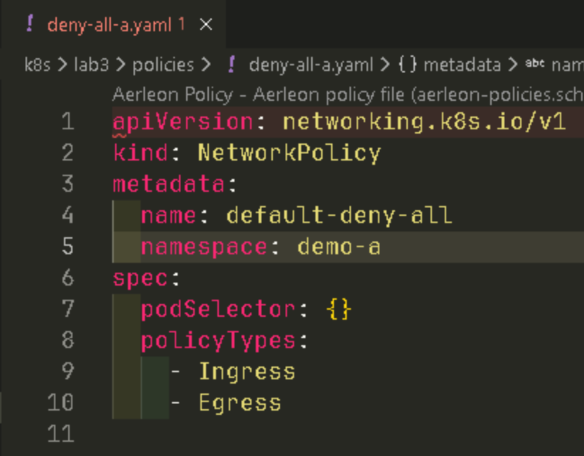
Apply it:
kubectl apply -f deny-all-a.yaml -n demo-a
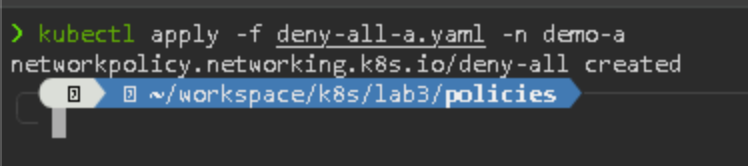
Verify the policy with:
kubectl describe networkpolicy deny-all -n demo-a
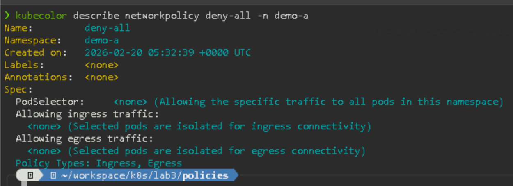
4.2 Test connectivity after default-deny
Run another busybox in demo-a in a different terminal:
kubectl run testpod --rm -ti --image=busybox --restart=Never -n demo-a -- /bin/sh
Then inside the shell:
nslookup nginx-b.demo-b.svc.cluster.local
wget -qO- --timeout=5 nginx-b.demo-b.svc.cluster.local
Expected Result:
The request should fail — demonstrating that all traffic is blocked unless explicitly allowed.
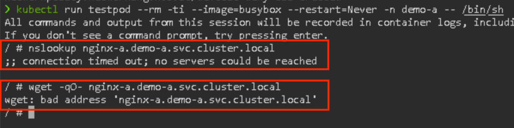
The result shows that also the DNS resolution is failing, due to the forbidden egress traffic outside the namespace
demo-a
Task 5: Allow Egress to DNS Service
Kubernetes namespace kube-system host the DNS service for the cluster usinf CoreDNS. After the deny-all policy, this traffic is also affected so a explicit rule allowing it is required.
5.1 Create an allow DNS policy
Create allow-dns-egress.yaml
apiVersion: networking.k8s.io/v1
kind: NetworkPolicy
metadata:
name: allow-dns-egress
namespace: demo-a
spec:
podSelector: {}
policyTypes:
- Egress
egress:
- to:
- namespaceSelector:
matchLabels:
kubernetes.io/metadata.name: kube-system
ports:
- protocol: UDP
port: 53
- protocol: TCP
port: 53
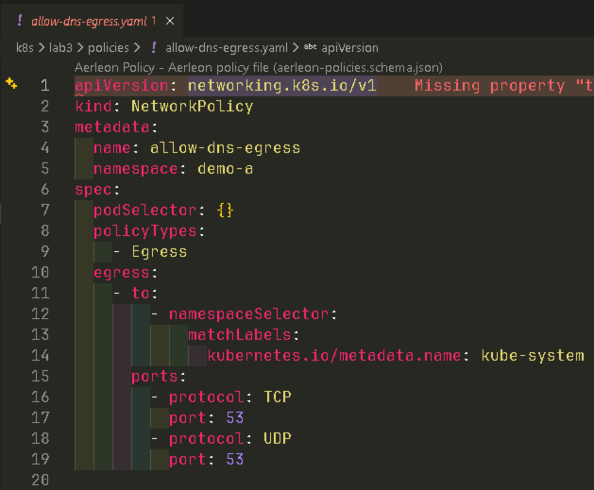
To get the
kubernetes.io/metadata.name: kube-systemlabel you can use the following cli commandkubectl get namespace kube-system --show-labels. This shows the system label asigned to the resource by the cluster.
Apply the policy
kubectl apply -f allow-dns-egress.yaml -n demo-a
Check the Network Policy stacking with kubectl describe networkpolicies -n demo-a
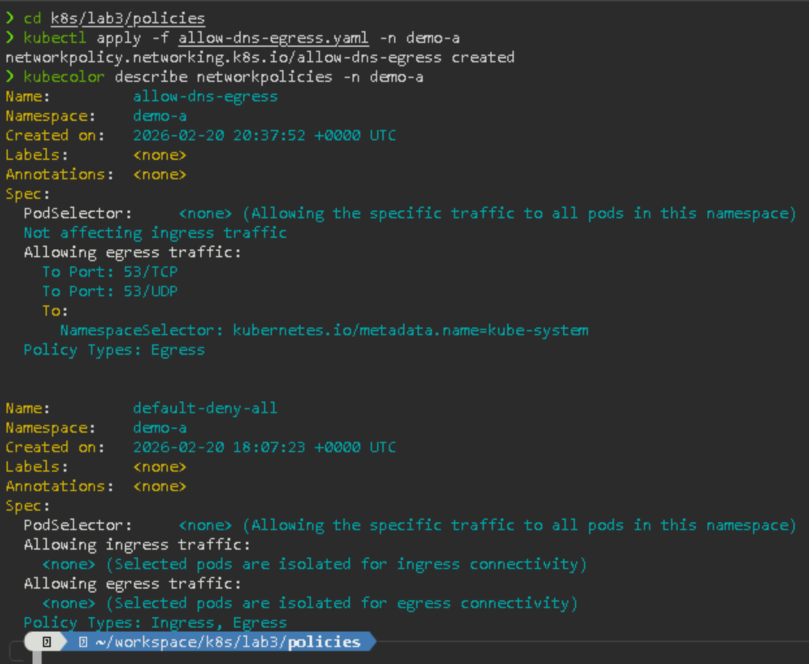
5.2 Validate egress to DNS allowance
kubectl run testpod --rm -ti --image=busybox --restart=Never -n demo-a -- /bin/sh
Then run
nslookup nginx-a.demo-a.svc.cluster.local
Expected Result:
The name resolution output

Challenge
-
What is the response for the
wget -qO- nginx-a.demo-a.svc.cluster.localwith this policy? -
What is the service ClusterIP response for the
nginx-b.demo-b.svc.cluster.local?
Task 6: Allow Ingress to Specific Service
Next you will allow traffic from pods in demo-a to the nginx-a service only.
6.1 Create an allow policy
Create allow-nginx-a.yaml:
apiVersion: networking.k8s.io/v1
kind: NetworkPolicy
metadata:
name: allow-nginx-a
namespace: demo-a
spec:
podSelector:
matchLabels:
app: nginx-a
policyTypes:
- Ingress
ingress:
- from:
- namespaceSelector:
matchLabels:
kubernetes.io/metadata.name: demo-a
ports:
- protocol: TCP
port: 80
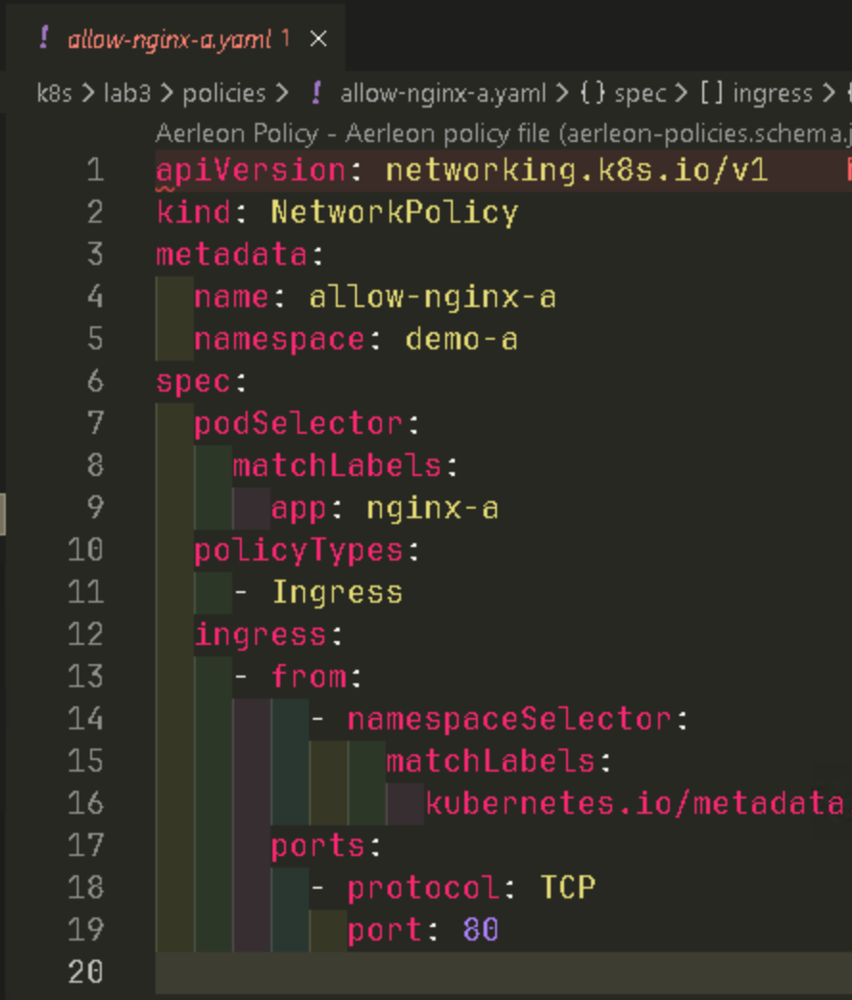
In the podSelector key it is a match for the app label to identify the Pod. You can verify with
kubectl get pods -l app=nginx-a -n demo-a
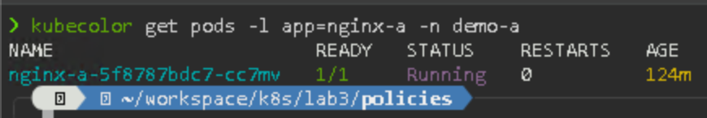
Apply the policy
kubectl apply -f allow-nginx-a.yaml -n demo-a
Verify the policy
kubectl describe networkpolicy allow-nginx-a -n demo-a
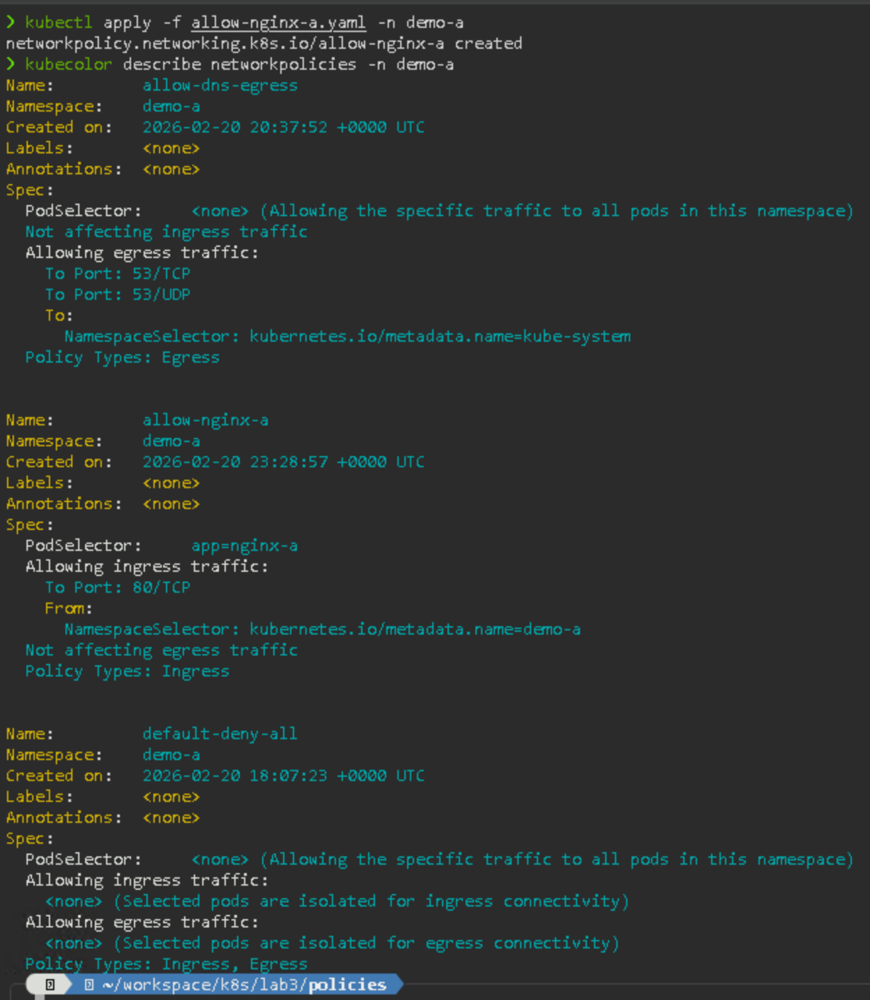
6.2 Validate ingress allowance
Run another busybox in demo-a in a terminal:
kubectl run testpod --rm -ti --image=busybox --restart=Never -n demo-a -- /bin/sh
Within the demo-a busybox shell:
wget -q --timeout=5 nginx-a.demo-a.svc.cluster.local -O -
Expected Result:
The NGINX will fail. Why?
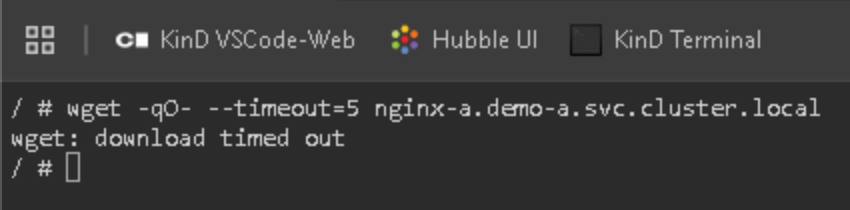
The reason is because your test pod is also in demo-a, so it's also under the deny-all policy.
That means it needs an explicit egress rule to port 80 to be able to make the HTTP request, otherwise the outbound connection is dropped before it even reaches nginx-a
6.3 Reconfirm cross-namespace blocking
Inside the same demo-a test pod:
wget -qO- --timeout=5 nginx-b.demo-b.svc.cluster.local -
Expected Result: The request is still blocked — because no policy allows it.
6.4 Create an allow http egress policy
Create a new file allow-http-egress.yaml:
apiVersion: networking.k8s.io/v1
kind: NetworkPolicy
metadata:
name: allow-http-egress
namespace: demo-a
spec:
podSelector: {} # applies to all pods in demo-a, or use matchLabels: app: busybox to scope it down
policyTypes:
- Egress
egress:
- to:
- namespaceSelector:
matchLabels:
name: demo-a # only allow HTTP egress within demo-a
ports:
- protocol: TCP
port: 80
- protocol: TCP
port: 443
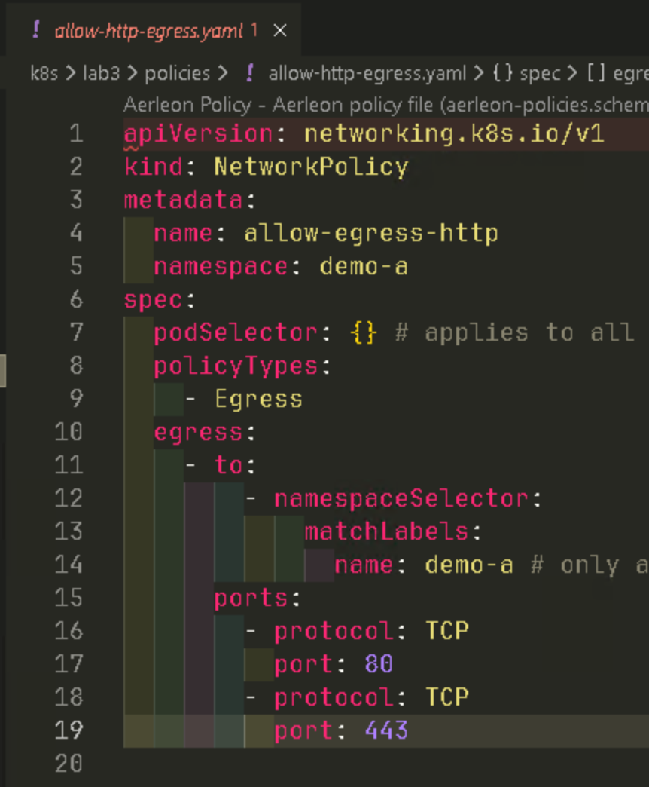
Apply the policy
kubectl apply -f allow-http-egress.yaml -n demo-a
Verify the policy
kubectl describe networkpolicy allow-nginx-a -n demo-a
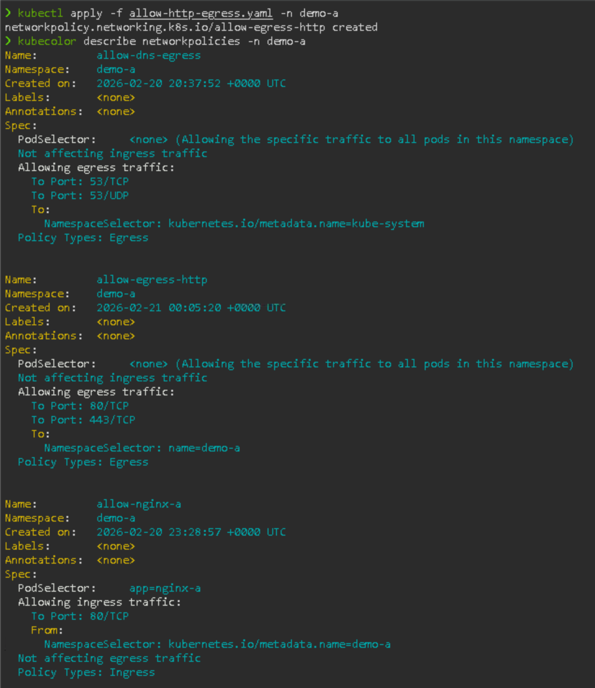
6.5 Validate http egress allowance
Run another busybox in demo-a in a terminal:
kubectl run testpod --rm -ti --image=busybox --restart=Never -n demo-a -- /bin/sh
Within the demo-a busybox shell:
wget -q --timeout=5 nginx-a.demo-a.svc.cluster.local -O -
Expected Result:
Traffic works!
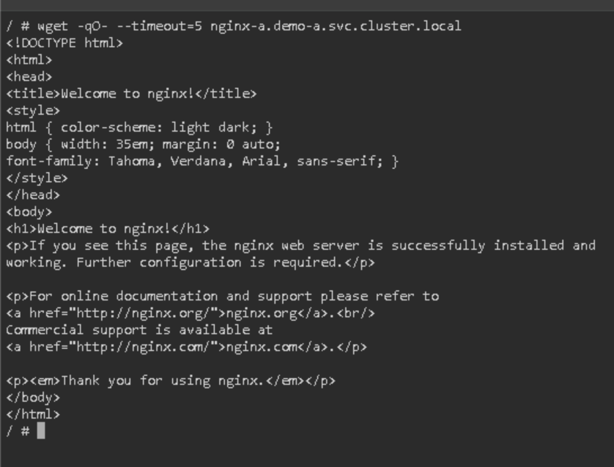
6.6 Final Policy Set
Run
kubectl get networkpolicies -n demo-a
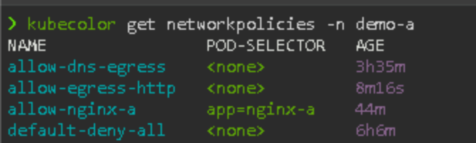
Network Policy Summary:
| Policy | Direction | Description |
|---|---|---|
| default- deny-all | Ingress/Egress | blanket deny, both directions, all pods |
| allow-dns-egress | Egress | egress only, all pods, port 53 |
| allow-http-egress | Egress | HTTP/HTTPS to nginx-a pod |
| allow-nginx-a | Ingress | allow ingress to port 80 from ns demo-a |
Each policy has a single responsibility, a descriptive name that tells you exactly what it does, and touches only one direction. When something breaks in the future — and it will — you'll thank yourself for keeping them clean and separate.
Task 7: Cleanup
Remove the sample network policies and test namespaces.
kubectl delete ns demo-a demo-b
Expected Result:
Both namespaces and all policies are deleted, returning the cluster to its previous state.
Remove the kind cluster
kind delete cluster --name my-k8s
Expected Result:
Cluster is removed
Lab Completion
Congratulations! You have completed Lab 3
-
You installed Calico networking, deployed workloads, and implemented Kubernetes L3/L4 Native NetworkPolicies to secure traffic between pods.
-
You apply best practices for Network Policy. Explicit Policy for Ingress and Egress where created and tested.
-
You now understand how traffic flows by default and how to lock it down using policy rules.